Pokémon GO 哪些寶可夢不能交換？
絕大多數寶可夢都可以交換，所以與其背「哪些能換」，不如記住 不能換的那 22 隻。這一頁就是那份清單， 以及幾個常被誤會、其實換得到的例外。
判斷依據是遊戲設定檔（GAME_MASTER）裡每隻寶可夢的 isTradable 欄位，
不是玩家整理的名單，所以會隨遊戲更新自動跟著變。
交易清單產生器用的是同一份判斷 ——
列不出來的寶可夢，就是換不到的。
完全不能交換的寶可夢
幾乎都是幻之寶可夢 —— 這類只能靠特殊調查或活動取得，官方一律鎖住交換。 另外兩隻是能量型態受限的傳說寶可夢。
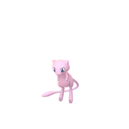
#151夢幻幻之寶可夢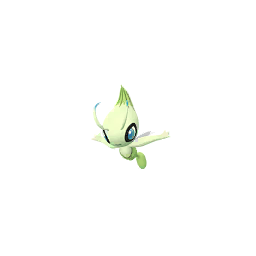
#251時拉比幻之寶可夢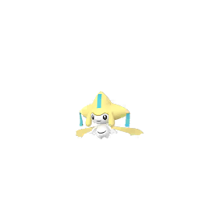
#385基拉祈幻之寶可夢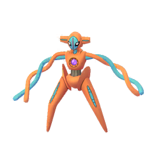
#386代歐奇希斯幻之寶可夢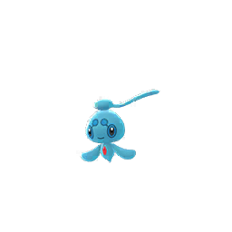
#489霏歐納幻之寶可夢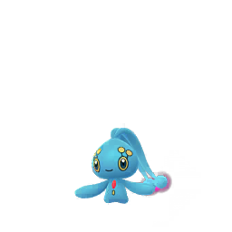
#490瑪納霏幻之寶可夢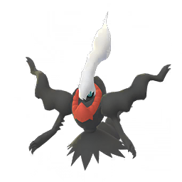
#491達克萊伊幻之寶可夢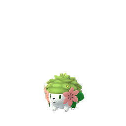
#492謝米幻之寶可夢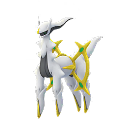
#493阿爾宙斯幻之寶可夢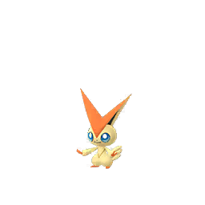
#494比克提尼幻之寶可夢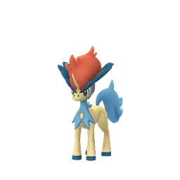
#647凱路迪歐幻之寶可夢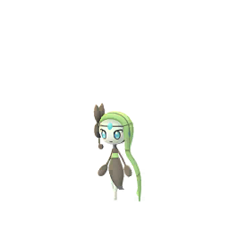
#648美洛耶塔幻之寶可夢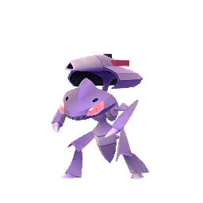
#649蓋諾賽克特幻之寶可夢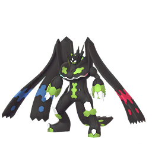
#718基格爾德傳說寶可夢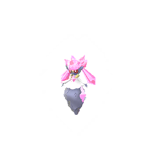
#719蒂安希幻之寶可夢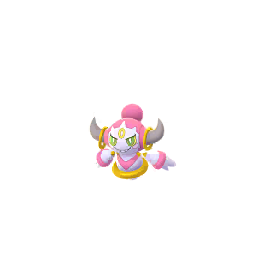
#720胡帕幻之寶可夢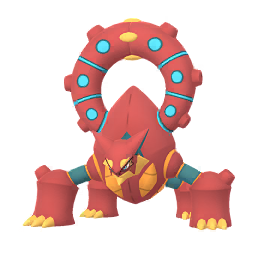
#721波爾凱尼恩幻之寶可夢- —#801瑪機雅娜幻之寶可夢
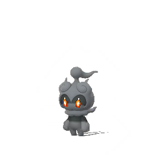
#802瑪夏多幻之寶可夢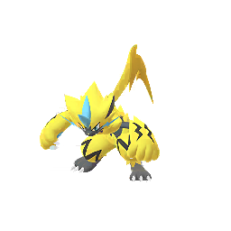
#807捷拉奧拉幻之寶可夢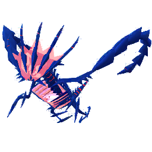
#890無極汰那傳說寶可夢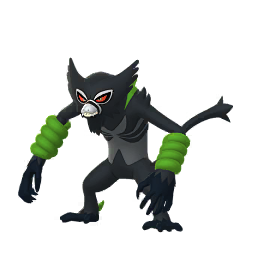
#893薩戮德幻之寶可夢
例外：這些幻之寶可夢可以交換
「幻之寶可夢不能交換」是很常見的誤解。實際上遊戲設定檔裡，下面這幾隻是開放交換的 —— 如果你手上有多的，是可以拿來換東西的。
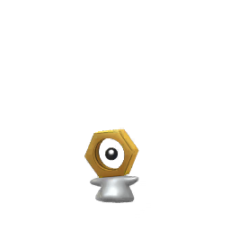
#808美錄坦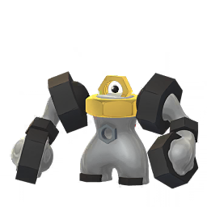
#809美錄梅塔
只有特定型態不能交換
這幾隻本體換得到，但合體之後的型態換不了。要交換的話得先解除合體。
- #646酋雷姆闇黑酋雷姆、焰白酋雷姆 不可交換
- #800奈克洛茲瑪拂曉之翼、黃昏之鬃、究極奈克洛茲瑪 不可交換
這份清單是怎麼判定的
每隻寶可夢在 GAME_MASTER 裡都有一組設定，其中 isTradable 直接寫明能不能交換。
本頁逐一讀取這個欄位產生，沒有人工維護的名單，所以不會因為漏更新而過期。
不過有一個地方不能照字面讀：部分型態根本沒有寫這個欄位。
如果一律當成「不能換」，蒼響的王之劍型態、藏瑪然特的王之盾型態就會被誤判 ——
它們的欄位缺席，但另一個欄位 isTransferable（能不能傳送給博士）是開的，
實際遊戲裡也換得到。真正被鎖住的合體型態則是兩個欄位一起缺席。
所以判斷方式是：欄位缺席但可傳送 → 沿用該寶可夢基本型的設定；兩個都缺席 → 不可交換。
資料隨 GAME_MASTER 更新，可能與遊戲內當下狀態有短暫落差。 尚未在 Pokémon GO 實裝的寶可夢即使設定檔裡標為可交換，遊戲內也還取得不到。
做一張交換清單
確認想要的寶可夢換得到之後，可以用交易清單產生器 把它們挑成一張圖片，分成「我想要的」和「我能提供的」貼給對方。 清單裡本來就過濾掉不可交換的寶可夢，不會做出換不到的清單。